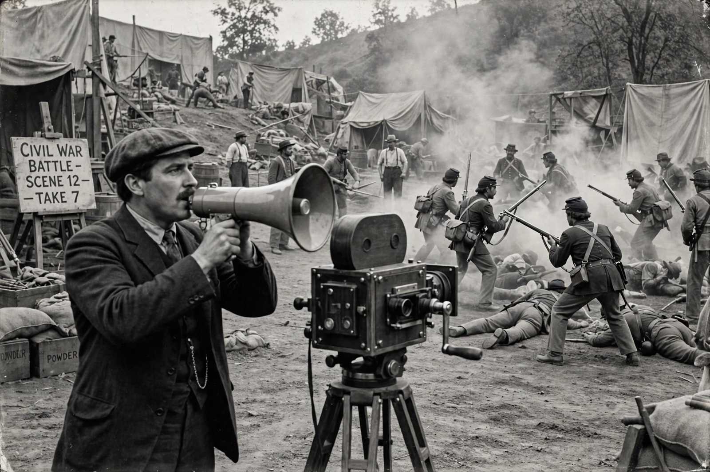

| D. W. Griffith | |
|---|---|
| Born | David Wark Griffith, 22 January 1875, La Grange, Kentucky, U.S. |
| Died | 23 July 1948 (aged 73), Hollywood, California, U.S. |
| Occupation | Film director, producer, screenwriter |
| Years active | 1895–1931 |
| Notable works | The Birth of a Nation (1915), Intolerance (1916), Broken Blossoms (1919) |
David Wark Griffith (January 22, 1875 – July 23, 1948) was an American film director. Considered one of the most influential figures in the history of the motion picture, he pioneered many aspects of film editing and expanded the art of the narrative film. He is best known for The Birth of a Nation (1915) and Intolerance (1916).
Griffith began his career in theatre before joining the Biograph Company in 1908, where he directed hundreds of short films and developed or popularised techniques including the close-up, cross-cutting, the flashback, and careful composition in depth. His feature The Birth of a Nation (1915), adapted from Thomas Dixon Jr.'s novel The Clansman, was a landmark in film history and a major commercial success, but its glorification of the Ku Klux Klan and racist depiction of Black Americans sparked protests and enduring controversy. His follow-up, Intolerance (1916), interwove four parallel stories across history.
In 1919 Griffith co-founded United Artists with Charlie Chaplin, Mary Pickford, and Douglas Fairbanks. Films such as Broken Blossoms (1919), Way Down East (1920), and Orphans of the Storm (1921) followed, though his career declined with the coming of sound; his last film was The Struggle (1931).
Griffith's innovations in film grammar shaped generations of directors working in classical Hollywood cinema. The Directors Guild of America's lifetime achievement award was formerly named after him before being renamed in 1999 because of the controversy surrounding The Birth of a Nation. He received an honorary Academy Award in 1936.